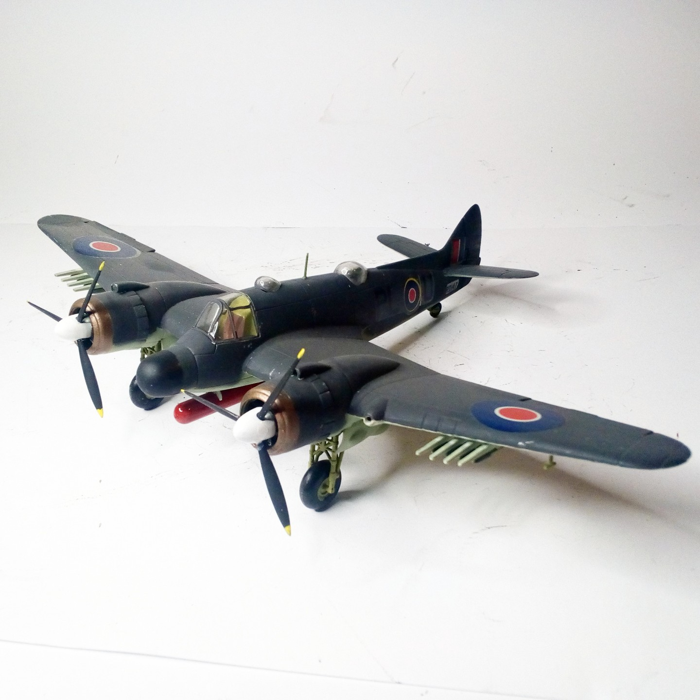
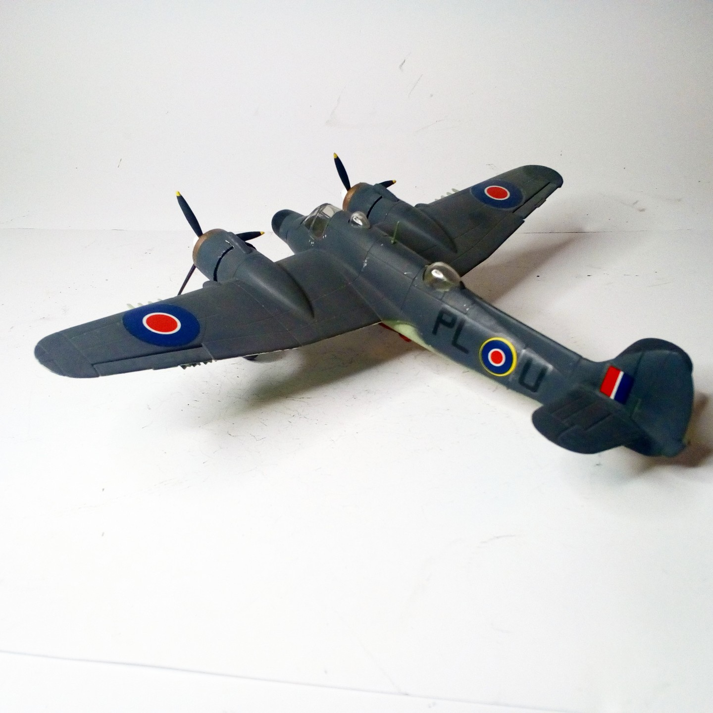

Aerei · scale model archive
Bristol Beaufighter Mk.X
Bristol Beaufighter Mk.X — Kit: Matchbox, Scale: 1/72. 144th Sqn, RAF Coastal Command Scotland 1944/45 #1/72 #Matchbox #Beaufighter

Photo gallery

English description
144th Sqn, RAF Coastal Command Scotland 1944/45
#1/72 #Matchbox #Beaufighter
Descrizione italiana
144th Sqn, RAF Coastal Command, Scozia, 1944/45.